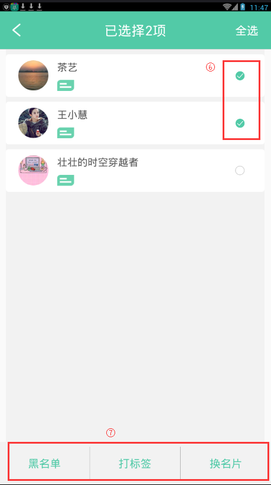

26. 如何处理名片夹中的名片？
1. 导航栏中点击"人脉"，进入到人脉主页面中。
2. 拓展人脉页面单击搜索输入框，进入客户分类页面。
3. 长按名片或点击"..."->"批量操作"，启动批量操作功能。
4. 选择名片后，可对选中的联系人进行"黑名单"，"打标签"，"换名片"等操作。
5.单击名片进入到联系人详情页面，通过右上角的"..."可对名片进行名片设置、消息设置、标签、备忘等操作。
- 注：对名片进行操作后，会自动将该名片添加到人脉中。
- 如果是换名片操作需要对方同意后才能将联系人添加到人脉中。